| Update,
March 14, 2006
I know
I said this update will *probably* be of the finished car..
well..it
isnt! 
sorry..
but
its almost done!
New
end platforms had to be built.
I
used Grandt Line On3 end beams and railings.
Because
the G.L. parts are designed for 3-foot gauge cars, they are too
wide
for my 2-foot gauge car.
they
are 47mm wide and I need them to be 41mm wide.
simple
solution..chop out 6mm from the middle and glue them back together!
The
original, unmodified beam is on the top,
the
chopped one on the bottom:
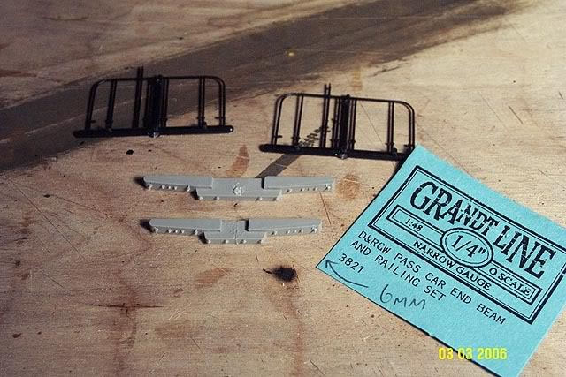
Now
new end platforms have to built from styrene.
cut
two rectangles 14mm by 32mm by 1.5mm thick:
(I
only used the 1.5mm because I happened to have it, but its pretty close
to
what I needed..)
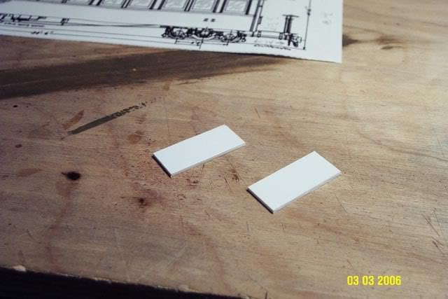
A few
more bits of styrene make up the finished platforms.
and
the G.L. end beams are glued on.
Left
platform is top view.
Right
platform is bottom view.
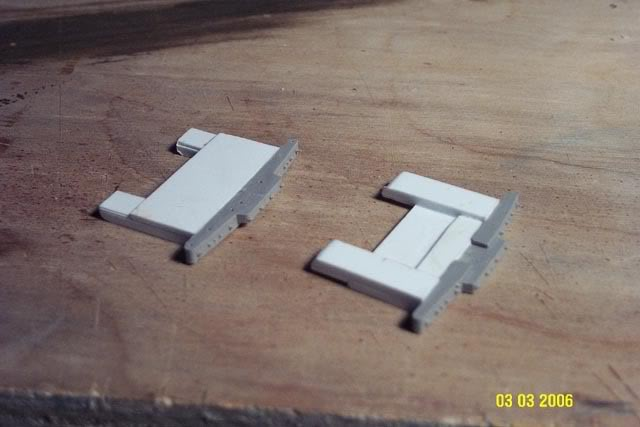
I use
Plastruct "plastic weld" for any plastic-to-plastic gluing.
super-glue
for anything else.
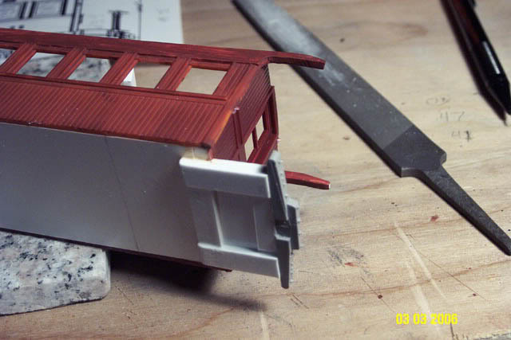
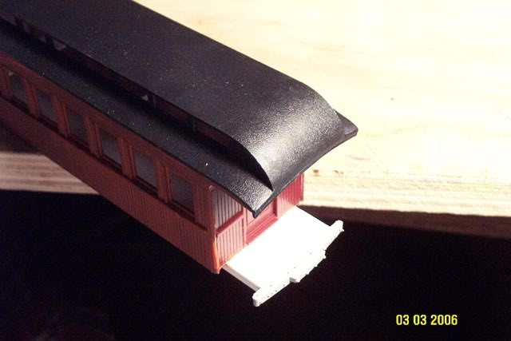
The
location of the trucks had to be moved inward a few mm from the prototype
position,
so they would clear the platform and still pivot properly.
On
the prototype, the trucks actually sit *between* the platform supports!
but
the curves of our model railroads always require some compromises..
this
is one of them.
I
doubt the difference will even be noticable.
they
are moved inward 6mm from where they "should" be..
If
I didnt tell you they were too far inside, I bet no one would have ever
noticed!
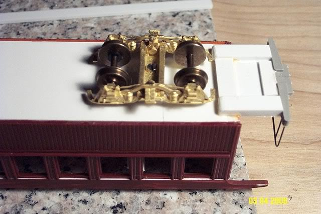
New
steps scratchbuilt from brass strips.
I
used brass rather than styrene so I could bend the step supports into an
"L" shape
to
hold the step itself.
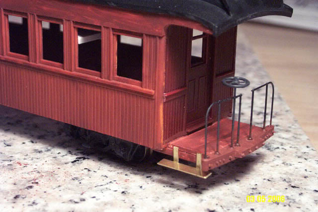
I used
the Grandt platform handrails as-is.
the
opening in the center between the two sets of handrails ends up being a
bit
narrow,
because of the 6mm taken out of the center of the end beam, but I can live
with it!
again,
thats another example of "if you didnt know it was there, you probably
wouldnt
have
noticed"!
im
giving away too many flaws!
these
are all just tiny compromises we have to make to build an operating model.
no
model is ever 100% to scale anyway.
Since
I have no immediate use for the Bachman On30 trucks, I chopped off the
brakes
to
add to my new trucks! makes a big difference in apperance!
I
cut the brake shoes off of the Bachman trucks, built a brass strap connecting
the
brake shoes, and glued the assembly to the trucks.
original,
brakeless truck on the left.
new
truck, with brakes, on the right.
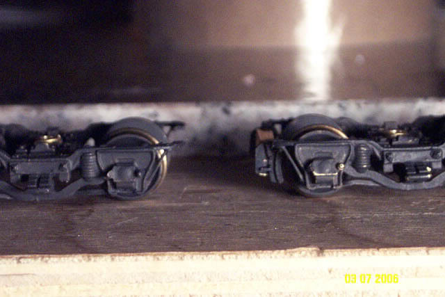
How
to attach the roof??
I
didnt want to glue the roof on..because the bolts for the trucks
extend up
into
the coach body, im going to add seats, the window "glass" might fall off
someday...having
a roof glued on is just asking for trouble..
Why
taunt Murphy??..you know he will make you pay for it!
you
*know* you are going to need to get back inside someday for something!
so..I
came up with a styrene "frame"..the outside dimension of the frame (37mm)
is exactly
the
same as the inside width of the coach body.
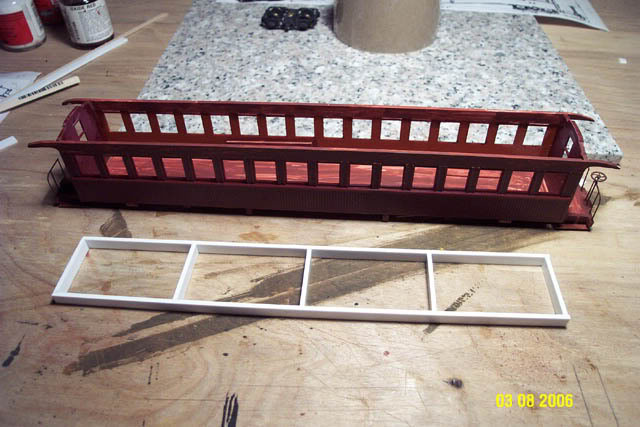
Then
the new styrene frame is firmly glued to the underside of the roof,
making
sure its all nice and centered.
Now
that frame slides down into the coach, and since the outside of the frame
is
the same width as the inside of the coach, and the coach walls naturally
bend
inward
a bit as well, the roof is held on quite tightly by pressure alone.
and
can be easily lifted off as necessary.
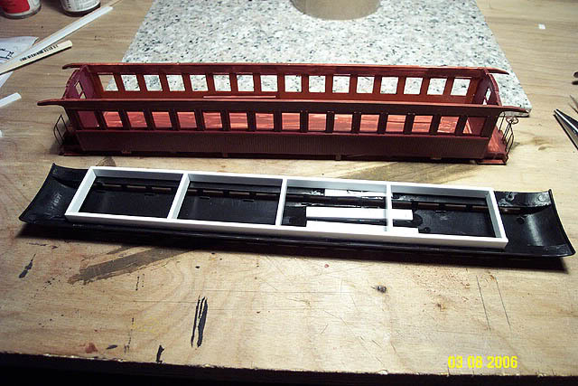
Painting
underway! 
I used
Tamiya AS-13 Green (USAF) for the green of the coach body.
and
Floquil 130601 Zinc Chromate Primer for the roof.
both
are spray cans.
(the
Floquil Z.C. primer is an *exact* match to the Floquil Oxide Red in the
bottle)
Looks
good!
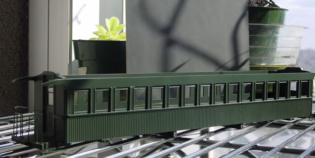
almost
done!
Ok,
the next update will *really* be of the finished car!
I
mean it this time!
On
to Page 5! 
sscotsman@yahoo.com
Back
to Page 1 of the coach bash.
Back
to Scot's main page
|